Chapter 5 Results
5.1 Employment
In this sub chapter, occupational employment is examined with respect to boroughs, genders, races, and in aggregate.
5.1.1 Overview of Employment Distribution
In order to have an overview of employment distribution according to different occupations in New York City, a Cleveland Dot Plot was drawn to show the 10-year-average of number of employed first.

Observations on Number Employed by Occupation in NYC:
- Huge Differences in Number of Employed in Different Occupations.
- There is a huge difference in number of employed among occupations. The sector with the biggest number of employed is office and administrative support, and the number of employed is 757015. However, for farming, fishing and forestry, which has the smallest number of employed, there’s only 4864 on average.
- Three clusters for employment.
- The first group includes
Office and administrative support,Management,Sales and related, which is a group with the biggest number of employed. - The second group includes the majority of occupations and have relatively similar number of employed among occupations.
- The third group contains
Farming, fishing, and forestryonly, which is the group with the smallest number of employed.
- Gaps between the three clusters.
- As can be seen from the plot, the gap between the first group and second group is very large, while the gap between the second and third group is relatively small.
- Top 3 and Bottom 3 Occupations in Employment:
- Top 3:
- Office and administrative support
- Management
- Sales and related
- Bottom 3:
- Farming, fishing, and forestry
- Life, physical, and social science
- Law enforcement workers
5.1.2 Analysis on Employment by Years
Employment tends to change over time. So one area of analysis that was performed was to examine employment throughout the years 2010-2019.
5.1.2.1 General Trend of Employment by Years

Observations on Number Employed by Occupation NYC through 2010-2019:
The most striking observations from this Cleveland dot plot are where there are clear trends over the decade, that coincide with intuition about the general trend of a sector. Some of the most striking trends are:
In order to see the employment variances of the 25 occupations in detail, a boxplot is drawn.

Observations from Boxplot of number working in sector per year:
Occupations that seem prone to dramatic fluctuation over time:
Occupations where the number of employees has fluctuated very little:
Something to be noted when reading this plot is that the number of people working in any particular occupation may change the viewers perception as to what constitutes more variation. To address this, a second plot has been created in which the box plots are normalized by dividing the number employed in each year by the mean across this sector. While the variation in total number employed won’t be apparent, the relative degrees of fluctuation will become more apparent.

Observations from number working in sector per year:
In this plot, the total values of employees working in each field in each year are normalized by their averages. In doing this, changes in employment in a sector that on an absolute scale would be small, may be more pronounced as a function of variation relative to it’s own size.
In this plot, the average quantity across all years is normalized to one for illustrative purposes, which allows for new interpretations and findings:
1.) Fields such as management which had a large absolute spread from the years 2010-2019 aren’t necessarily the ones which seem to display the most variation with respect to themselves. While management had the largest box in the previous plot, it is in the middle of the pack in this one.
2.) Of the fields with the smallest numbers of workers: Farming, fishing and forestry occupations, Life, physical and social science occupations, Law enforcement occupations, firefighting occupations, and architecture and engineering occupations; The spreads across this decade were shown to be much more profound than in the previous plot, that is with the exception of law enforcement workers and firefighting workers. While the boxes grew somewhat in spread, the growth was not even nearly proportional to that of the other fields.
This indicates that the number of people working in law enforcement and firefighting is very stable, and this would make sense because a steady supply of people in these roles is necessary. With regards to the other occupations, it also makes sense that relatively unpopulated occupations would be more prone to greater variation as a percent of itself, since relatively few can leave or join, and a big impact can be had.
3.) As a percent of the number of employees working in each sector, the following were most prone to large shifts in number employed:
- Farming, fishing and forestry
- Material moving occupations
- Computer and mathematical occupations
- Health technologists and technicians
- Healthcare support occupations
By contrast, these professions were the most stable:
- Legal occupations
- Sales occupations
- Law enforcement workers
- Fire fighters
- Construction and extraction occupations
5.1.2.2 Monotonicity in Employment Trends
From the yearly cleveland dot plot above, all occupations are divided into three categories. The first group is in a monotonous increasing trend, the second group is in a monotonic decreasing trend, and the third group do not have a monotonic trend in number of employed people by years.
Monotonically Increasing:
Within this group are 14 kinds of occupations:
11. Community and social service occupations
Monotonically Decreasing:
Within this group is only one kind of occupation:
Not Monotonic:
Within this group are 10 different occupations:
Further study is conducted on the group that does not a monotonic trend with line chart.
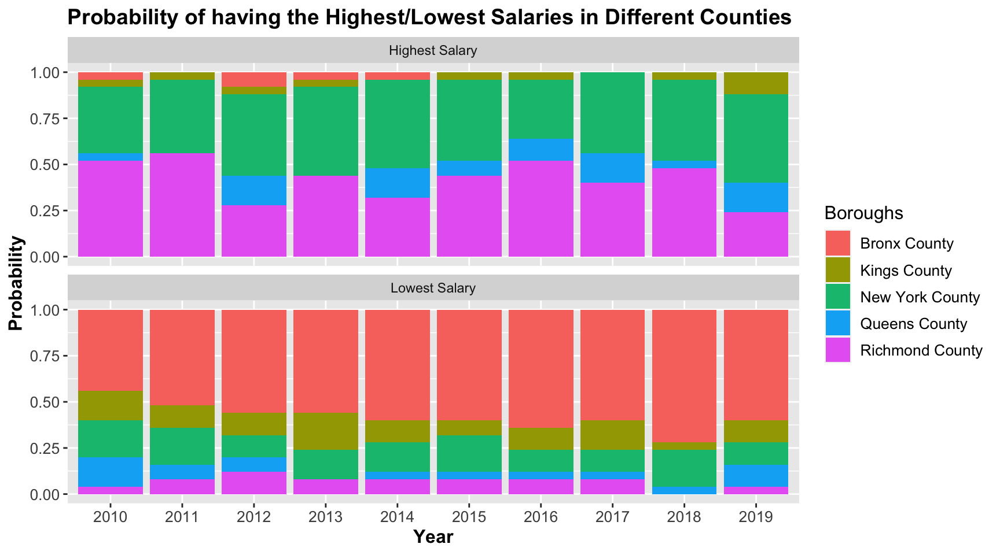
Observations from sectors without clear employment trends:
Here are descriptions of how these sectors have fluctuated:
5.1.3 Analysis of Employment by Counties
Employment also shows different characteristics in different counties. So we also do analysis on employment in different counties.
Plot abbreviations key:
MBSC: Management, business, science, and arts
NRCM: Natural resources, construction, maintenance
PTMM: Production, transportation, material moving
Note: Each line represents one year. The numbers on the axis represent the proportion of the working population of that county working in each of the categories for that year. The numbers across each sector for each year sum to one.
Observations from sector groups employment across counties:
Observing this plot, it can be seen that certain counties stand out in terms of how many of their people work in certain areas:
New York has great representation in Management, business, science, and arts with roughly 60% of its population routinely working in those fields across 2010-2019, which is at roughly 15% higher than for any other county.
Bronx County has great representation in service occupations, with roughly 35% of its population working routinely in this sector, which is at least 10% higher than for any other county.
Richmond County and Queens County seem to have good representation in natural resources, construction, and maintenance occupations.
New York, perhaps because of the high representation in the management, business, science, and arts cluster has clearly the lowest representation in service, natural resources, construction and maintenance, and production, transportation, management and material moving. New York also has the lowest representation in several years in Sales and Office occupations.
Of all the counties, Queens county, Kings county, and Richmond county seem to track each other most, and have the most similar levels of representation across the sector clusters.
Of all the counties, New York county and Bronx county seem to be the most different. Across almost each sector, low values for one almost certainly means that high values will appear for the other.
5.1.4 Analysis on Employment by Gender
The two genders often have different levels of employment throughout the occupations. In order to have a more comprehensive understanding of these relationships, analysis on genders role in employment will be conducted.

Observations on Number Employed by Occupation NYC for different genders:
A broad takeaway from studying this plot is that generally men tend to dominate the majority of professions, with 17 occupations being majority male, and only 8 occupations being majority female.
The occupations in which females account for the vast majority of employees are Office and administrative support, education, training, and library, healthcare support, and personal care and service.
The occupations in which males account for the vast majority of employees are construction and extraction, transportation, and installation, maintenance and repair.

Observations from gender composition by occupation:
From this plot, the top 10 occupations for males and females in terms of proportional representation can be listed.
Top 10 occupations for males:
Construction and extraction occupations
Installation, maintenance and repair occupations
Transportation occupations
Material moving occupations
Architecture and engineering occupations
Fire fighting and prevention, and other protective service workers including supervisors
Computer and mathematical occupations
Law enforcement workers including supervisors
Farming, fishing and forestry occupations
Food preparation and serving related occupations
Top 10 occupations for females:
Healthcare support occupations
Personal care and service occupations
Health, design and treating practitioners and other technical occupations
Education, training and library occupations
Health technologists and technicians
Community and social service occupations
Office and administrative support occupations
Life, physical, and social service occupations
Business and financial operations occupations
Legal occupations
5.1.5 Analysis on Employment by Race
Races also have an influence upon employment. In this stacked bar chart, this influence is explored.

Observations from Race Proportions by Sector Given Equal Populations:
Note: This plot was formed by comparing the proportions of each race group working in each sector. If for a particular sector each group accounts for 0.25 in this plot, then each race group has the same percentage of its people working in that sector. This has the effect of displaying what the race demographics of a sector would look like assuming all races had the same population.
1.) It seems that a typical white person is much more likely than persons of other races to work legal profession compared to other races. They are also quite likely compared to other races to engage in Management occupations, physical, life and social science occupations, and art, design, entertainment, sports and media occupations.
2.) It seems that a typical white person is much less likely than persons of other races to work in health care support occupations, transportation occupations, production occupations, personal care and service occupations, material moving operations, and building and grounds cleaning and maintenance occupations
3.) It seems that a typical Hispanic person is much more likely than person of other races to work in Farming, Fishing and forestry occupations. They are also quite likely compared to other races to engage in building and grounds cleaning and maintenance occupations, construction and extraction operations, and material moving operations.
4.) It seems that a typical Hispanic person is much less likely than persons of other races to work in health diagnosing and treating practitioners and other technical occupations, business and financial operations, computer and mathematical occupations, legal occupations, art, design, entertainment, sports, and media occupations, architecture and engineering occupations, and life, physical, and social science occupations.
5.) It seems that a typical Black person is much more likely than persons of other races to work in fire fighting and prevention and other protective services including supervisors, law enforcement workers including supervisors, healthcare and support occupations, and community and social service occupations.
6.) It seems that a typical Black person is much less likely than persons of other races to work in architecture and engineering occupations, art, design, entertainment, sports and media occupations, farming, fishing, and forestry occupations, food preparation and serving occupations, life, physical and social science occupations, and legal occupations.
7.) It seems that a typical Asian person is much more likely than persons of other races to work in computer and mathematical operations, architecture and engineering operations, business and financial operations, health diagnosing and treating practitioners and other technical occupations.
8.) It seems that a typical Asian person is much less likely than persons of other races to work in Law enforcement occupations, fire fighting and prevention occupations, community and social service occupations, and building and grounds cleaning and maintenance occupations.
5.2 Salary
In this sub chapter, Salary is examined across the boroughs, occupations, races, genders with varying degrees of granularity from very specific analyses on races and gender to in aggregate.
5.2.1 Overview of Salary Distribution
In order to have an overview of salary distribution according to different occupations in New York City, we draw a Cleveland Dot Plot to show the 10-year-average salary of different occupations first.

Observations on Average Salaries by Occupation in NYC:
- Huge Differences in Salary for Different Occupations.
- There is a huge difference in salary among certain occupations. The range is up to 72947, which is about 3 times of minimum salary.
- Five clusters for salary distribution.
- The first group is
Legal, which has much higher average salary compared with all other occupations. - The second group includes 7 different occupations, which ranks second in salary levels among all occupations. We can also divide the second group into four sub-groups according to the salary.
- The first sub-group only includes
Health diagnosing and treating practitioners and other technical, which has the second largest salary. - The second sub-group includes
Computer and mathematicalandManagement. They have very similar average salary, the difference in salary of the two occupations is only 810. - The third sub-group includes
Law enforcement workers,Business and financial operationsandArchitecture and engineering. The salary range of this sub-group is also small, it is NA. - The fourth sub-group contains only one occupation, which is
Life, physical, and social science
- The first sub-group only includes
- The third group contains
Arts, design, entertainment, sports, and media,Health technologists and technicians,Education, training, and library,Installation, maintenance, and repair,Community and social serviceandConstruction and extraction. The salary range of this group is 7128. - The fourth group contains
Office and administrative support,Sales and related,TransportationandFire fighting and prevention. The salary range of this group is 3932. - The fifth group contains
Production,Healthcare support,Building and grounds cleaning and maintenance,Material moving,Personal care and service,Farming, fishing, and forestry,Food preparation and serving related. The salary range of this group is 8016.
- Gaps between the five clusters.
- From the first group to the fifth group, the salary gap between groups is 11623, 13564, 6048, 11989.
- Among all the gaps, the biggest one is between group 2 and group 3, and the gap is 13564. The smallest gap is between group 3 and group 4, and the gap is 6048.
- Highest and lowest salary occupations.
Top 3:
- Legal
- Health diagnosing and treating practitioners and other technical
- Computer and mathematical
Bottom 3:
- Personal care and service
- Farming, fishing, and forestry
- Food preparation and serving related
As can be seen from the plot, the salary range for the top 3 occupations are large. However, for the bottom 3 occupations, the salary range is relatively small.
5.2.2 Analyzing Average Salary from 2010-2019
One of the things that affects salary is time. In this section, analysis will be performed on salary with respect to years and the passage of time.
5.2.2.1 General Trend of Salary from 2010-2019
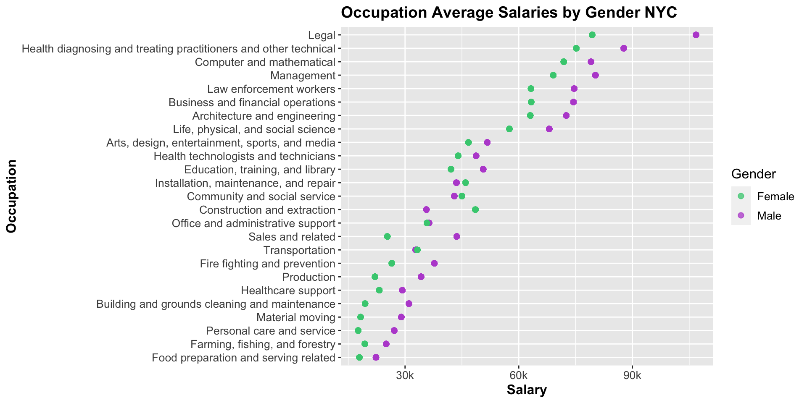
Observations on Salaries by Occupation NYC through 2010-2019:
- Salary Trends for Top 3 and Bottom 3 Occupations
Top 3:
1.) Legal occupations
- The average salary of workers in legal occupations is increasing monotonically. In this span of years, the rate at which the average salary is increasing is increasing, with a bigger difference betweeen 2015 and 2019 salaries and 2015 and 2010.
- The average salary of workers in legal occupations is increasing monotonically. In this span of years, the rate at which the average salary is increasing is increasing, with a bigger difference betweeen 2015 and 2019 salaries and 2015 and 2010.
2.) Health diagnosing and treating practitioners and other technical occupations
- This occupation has a monotonically increasing salary trend.
- This occupation has a monotonically increasing salary trend.
3.) Computer and mathematical occupations
- This occupation has a monotonically increasing salary trend.
- This occupation has a monotonically increasing salary trend.
Bottom 3:
1.) Food preparation and serving related occupations
- This occupation has the lowest salary within the year range in 2010. However, its salary is increasing over time, and from 2015 to 2019, a rather large salary bump was seen compared to the window from 2010 to 2015.
- This occupation has the lowest salary within the year range in 2010. However, its salary is increasing over time, and from 2015 to 2019, a rather large salary bump was seen compared to the window from 2010 to 2015.
2.) Farming, fishing, and forestry occupations
- The salary for this occupation decreased first and then increased. However, by 2019 the salary didn’t increase enough from 2015 to be as high as it was in 2010.
- The salary for this occupation decreased first and then increased. However, by 2019 the salary didn’t increase enough from 2015 to be as high as it was in 2010.
3.) Personal care and service occupations
- The salary trend for this occupation also decreased first and then increased. In this case, the salary only dropped a little bit first and then increased a lot. Therefore, generally speaking, the salary of this occupation increased.
- The salary trend for this occupation also decreased first and then increased. In this case, the salary only dropped a little bit first and then increased a lot. Therefore, generally speaking, the salary of this occupation increased.
In order to see the salary variances of the 25 occupations in detail, a boxplot is drawn for comparisons.
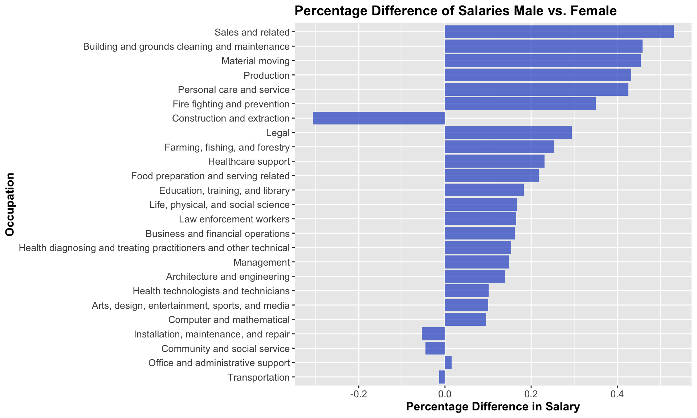
Race Proportions by Sector Given Equal Populations:
Salaries that seem prone to dramatic fluctuation over time:
Salaries where the number of employees has fluctuated very little:
When reading this plot the difference in size between the salaries of the different occupations may make certain variations seem more pronounced than others when this is not necessarily the case. To address this, a second plot has been created in which the box plots are normalized by dividing the salaries in each year by the mean across this sector. While the true numerical variation won’t be apparent, the relative degrees of fluctuation between occupations will become more apparent.

Observations from salaries in sector per year:
In this plot, the total values of employees working in each field in each year are normalized by their averages. Due to this normalization, it is more clear how the salaries of each occupation type vary over the period from 2010-2019 with respect to themselves.
1.) Farming, fishing and forestry ranks first in variation in salaries.
This makes sense because this occupation has relatively low salaries, so when normalized, it is more likely to show high variation in salary by years.
2.) Construction and extraction also has huge variance, even when the average salary for this occupation is not very low.
There are two outliers in this sector, in 2010, it has the lowest salary which is 26284, and in 2018, it has the highest salary which is 56175. Without the two data points, the variance will be much smaller. There might be more buildings under construction in 2018 and much fewer in 2010.
3.) Healthcare support and Law enforcement workers are the two most stable sectors in salaries.
Among all the occupations, Healthcare support and Law enforcement workers has the smallest variance after normalized. Of all the occupation types, it seems that law enforcement occupations have the most stable salaries. This might be because the salaries for these kinds of jobs are set by the local government, and government jobs tend to have stable and consistent pay.
5.2.2.2 Monotonicity in Salary Trends
It is often thought that salaries typically increase over time. In this plot however, the salaries of occupations which do not have increasing trends over the time period 2010-2019 will be considered. Among all types of occupations, only two types of occupations have lower salaries in the 2019 than in 2010 to 2013, namely, farming, fishing and forestry occupations and healthcare support occupations. Generally speaking, there are two different trends of salaries, namely, a monotonically increasing trend, which includes 18 occupations, and the trend that first decreases then increases, which includes 7 occupations.
Monotonic Increase
First Decrease Then Increase
In this category, the salaries of some occupations decreased a lot and then increased a little, which makes these categories have a decreasing trend in general. However, for other occupations, the salaries decreased a little first and then increased a lot. For these occupations, they are in an increasing trend in general. To learn more about the exact changing trends of salaries in this group, we draw scatter plots to analyze the trends of these occupations in detail.
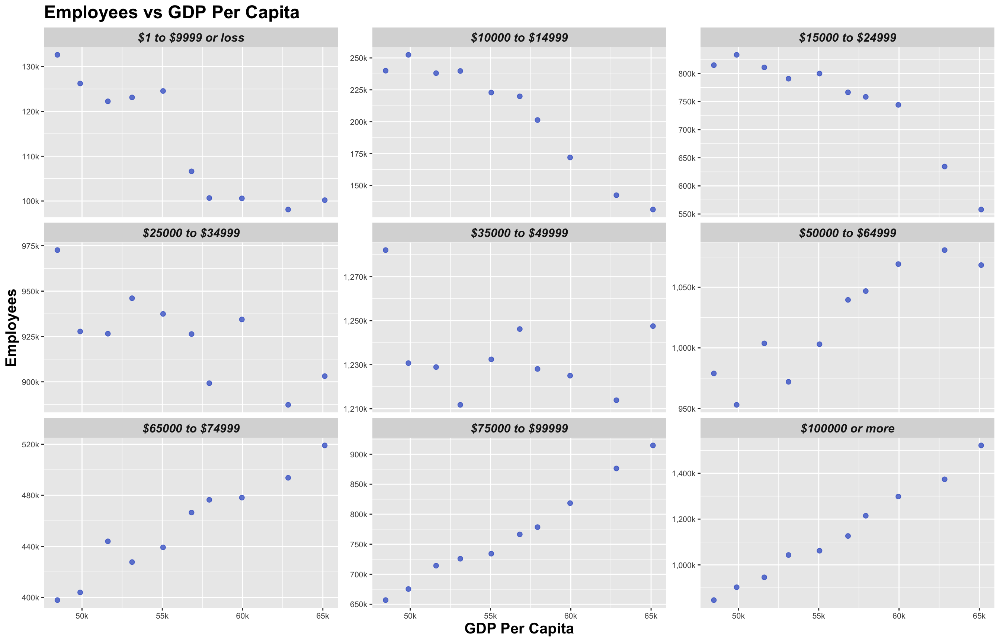
Observations from sectors without clear salary trends:
From the above plots, we see both the variations in salaries and the general trends for these occupations.
- Law enforcement workers including supervisors:
For this occupation, the salary is in the trend of a wave. The crests are in year 2011, year 2015, and year 2019. The troughs are in year 2012 and year 2016. Besides this, are two special points for this occupation.
- The salary dropped a lot from 2015 to 2016, and then returned to normal quickly from 2016 to 2017.
- The salary was in an decreasing trend from 2017 to 2018, but it did not continue to decrease, instead, it increased a lot from year 2018 to 2019.
Life, physical, and social science occupations:
For this occupation, the salary is in also in the trend of a wave. At the same time, it is in an increasing trend in general. The crests are in year 2013 and 2018. The troughs are in year 2012 and 2014.
Health technologists and technicians:
From year 2010 to 2013, the salary of this occupation grew slightly at a steady rate. However, from 2014 to 2015, the salary had a sudden drop. After that, the salary started to increase at a higher rate.
Fire fighting and prevention, and other protective service workers including supervisors:
The salary of this group is in a waving trend and remains at a certain level in general. The crests are in 2012, 2013 and 2017, and the troughs are in 2011 and 2016. However, there is a special point for this occupation.
- The salary had a sudden increase from year 2016 to year 2017.
- Healthcare support occupations:
Generally speaking, the salary trend is in a decreasing trend. The crests occurred in year 2010, 2013, and 2015. The troughs occurred in year 2014 and 2017.
- Personal care and service occupations:
Generally speaking, the salary of this occupation is in an increasing trend. It remained relatively stable before 2015, after that, the salary increased at a relatively high speed.
- Farming, fishing, and forestry occupations:
For this occupation, it salary increased a little from 2011 to 2012, and then began to decrease at a high speed from 2012 to 2014. After that, the salary recovered at a lower but steady speed.
5.2.2.3 Percentage Difference by Years
Along with studying how salaries tend to vary on an absolute scale over the course of years, salary trends can also be investigated from a percent change standpoint. Because different occupations have different base wages, it might be meaningful to percent changes in wages. Each bar in the following plot represents the percent increase or decrease over the course of the years 2010 to 2019.
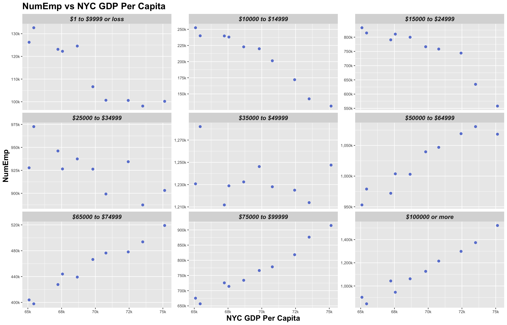
Observations from percentage difference of salary via gender:
As can be seen from the above plot, we discover that the majority of these occupations have increased in salaries in the past decade. Only two of these categories have decreased in salaries. Among all the occupations, construction and extraction occupations have seen the biggest percent change in salary from 2010 to 2019, and Healthcare support occupations have had the smallest.
5.2.3 Analysis of Salary by Counties
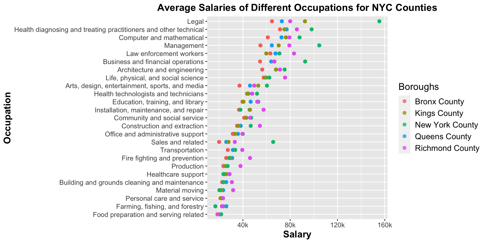
Observations on Salaries by Occupation NYC for different counties:
As can be seen in this plot, for different occupations, the counties with the highest and lowest wages in each occupation are different. For the majority of the occupations, the highest salaries are in New York County and the lowest salaries are in Bronx County. For the relatively low-paid occupations, the highest salaries tend to be in Richmond County.
5.2.3.1 Distribution of the Highest and Lowest Wages in Different Counties
A side by side bar chart was drawn to reflect the specific distribution data of the highest and lowest wages in different counties.
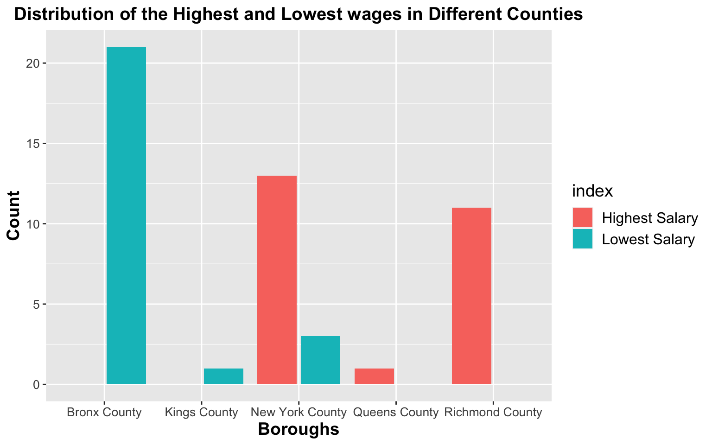
Observations on the Distribution of the Highest and Lowest wages in Different Counties:
As can be seen from this plot, the place where most occupations see their lowest salary compared to the other counties is Bronx County. While few of the lowest salaries for certain occupations appear in Kings County and New York County, no occupations have the lowest salary in Queens County and Richmond County.
For the highest salaries within occupation types, the majority of them are in New York County and Richmond County. Several of them also appear in Queens County, but none of them appear in Bronx County and Kings County.
To see whether there have been changes in the distribution of the highest and lowest wages in different countries, a stacked bar chart over the years 2010-2019 is drawn. Different colors are used to represent different counties.
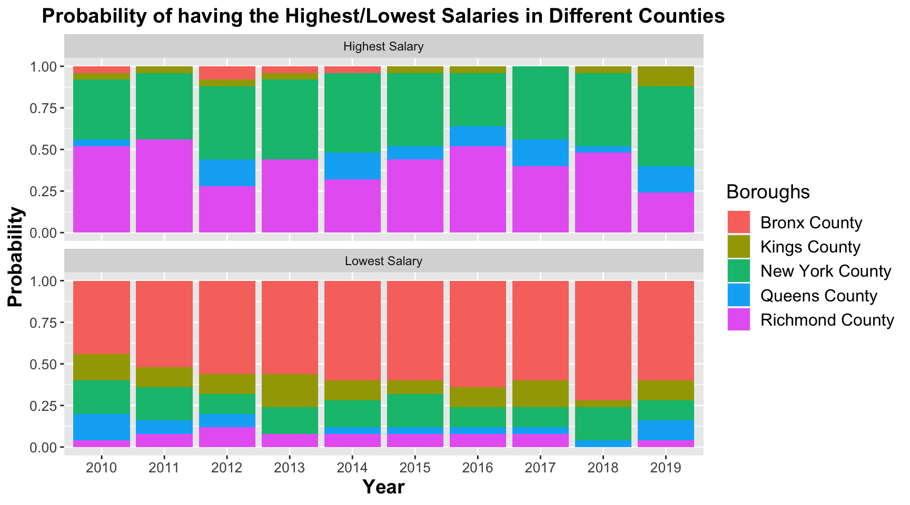
Observations on the Probability of having the Highest/Lowest Salaries in Different Counties:
As can be seen in this plot, from the perspective of each year alone, the situation is slightly different from the overall average, which is reflected in the following aspects.
- For the highest salary
In the previous averaged side by side bar chart, the maximum salary does not lie in Bronx County and Kings County for any occupation. However, as can be seen from the stacked bar chart, in year 2010, 2012, 2013 and 2014, there are some occupations with highest salary in Bronx County. Also, except for year 2014 and year 2017, there are some occupations with highest salary in Kings County.
- For the lowest salary
In the previous averaged side by side bar chart, the minimum salary does not lie in Queens County and Richmond County for any occupation. However, as can be seen from the stacked bar chart, in every year but 2013 there are some occupations in which the lowest salary of the five counties for that occupation is in Queens County. Also, in every year but 2018, there are some occupations in which the lowest salary of the five counties for that occupation is in Richmond County.
5.2.3.2 Percentage Difference of Salaries in Different Counties
It can also be discovered that the variations among different boroughs for different occupations are different. Therefore, a bar chart is used to display the degree of variance among different boroughs for all types of occupations. For each occupation, we use the salary in five counties to minus the smallest salary, add them up and divide the sum by 5. Then, we divide the value by the smallest salary to represent the variance of each occupation.
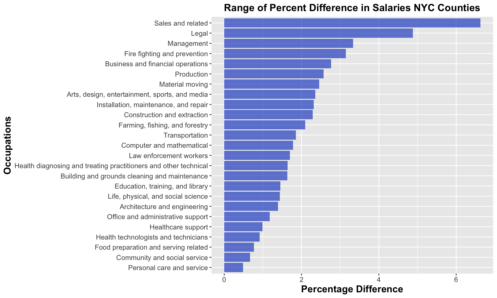
Observations on Range of Percent Difference in Salaries NYC Counties:
- Top 5 Highest Ranges of Percent Differences
2. Bottom 5 Highest Ranges of Percent Differences
5.2.4 Analyzing Salary by Genders
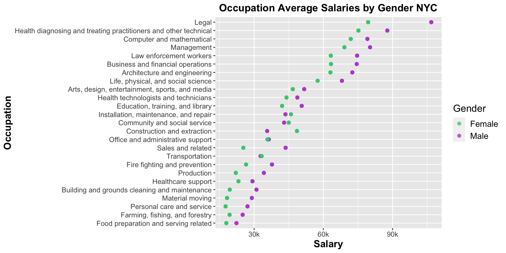
Occupation Average Salaries by Gender NYC:
As can be seen in this Cleveland dot plot, the salaries of some occupations vary a lot between different genders, while for other occupations the salaries for the two genders are quite similar. Also, for some kinds of occupations, males have higher salaries and for other kinds of occupations, woman have higher salaries. To have a deeper understanding of these characteristics, we have a deeper analysis on salaries for different genders in different occupations.
5.2.4.1 Percentage Difference of Salaries between Genders
A bar chart is used to order the percentage difference of salaries between genders for different occupations. To quantify the difference, the income difference between male and female is divided by the average salary for that occupation.
Observations on the Percentage Difference of Salaries for Different Genders:
From the horizontal bar chart above, the following observations can be made.
For most of the occupations, male employees have higher salaries than female employees. Female employees only have higher salaries in 4 kinds of occupations among the 25 kinds of occupations, namely, Construction and extraction occupations, Installation, maintenance, and repair occupations, Community and social service occupations, and Transportation occupations.
Top 5 and Bottom 5 in Magnitude of Percent Difference
- Top 5
- Bottom 5
5.2.4.2 Relation between Percentage Difference of Employment and Salary in Gender
Intuitively, the gender composition of employees in a profession may be related to the level of wages for each gender. It is desired to analyze if this intuition makes sense. Therefore, two categorical variables are used to represent the two characteristics, namely “Gender Distribution” and “Salary Distribution”. For the category of “Gender Distribution”, there are two values, Male-dominated, which means there are more male employees in this occupation than female employees, and Female-dominated, which means there are more female employees in this occupation than male employees. For the category of “Salary Distribution”, two values are set, Male-higher, which means male employees typically have higher salaries in this occupation, and Female-higher, which means female employees typically have higher salaries in this occupation. Then, a mosaic plot is drawn measure the relation.
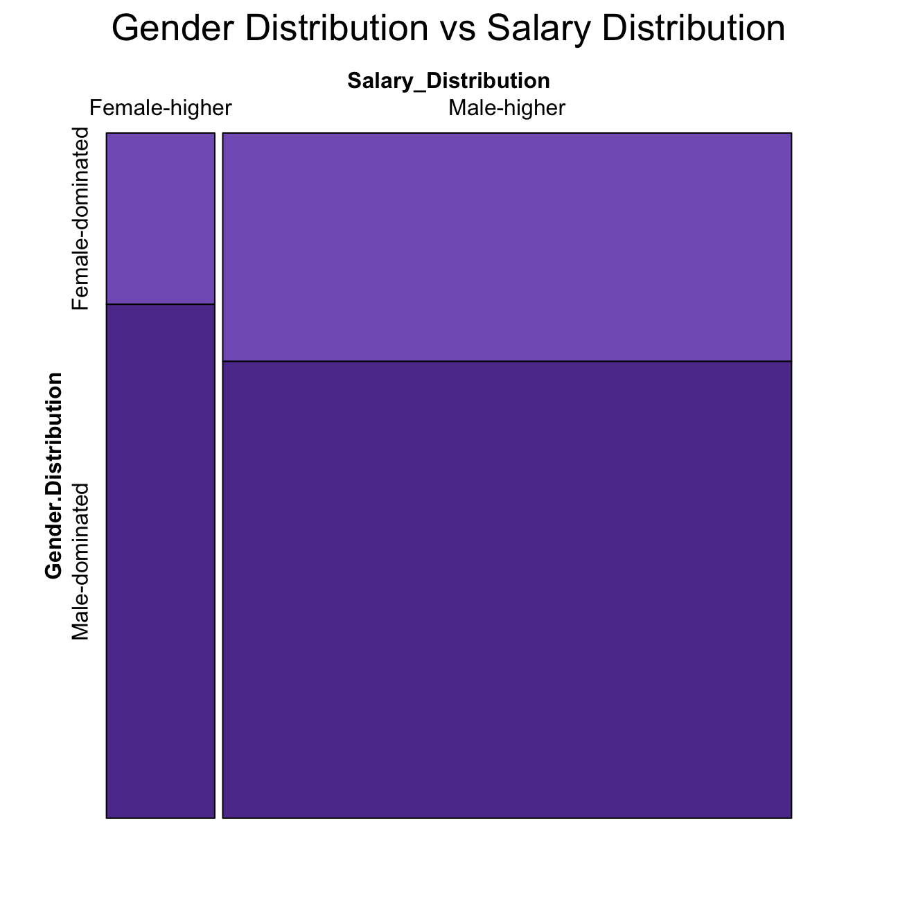
From this mosaic plot, it can be seen that there may be some relation between salary distribution and gender composition. However, the characteristic of this connection is against tuition. It seems intuitive to think that in the “Female-higher” salary distribution group, there will be more female-dominated occupations, and in the “Male-higher” salary distribution group, there will be more male-dominated occupations. However, based on what can be observed from looking at this plot, the opposite is actually true.
5.3 Education
In this section Education trends are examined. The changes in education over time and across genders are studied, and how educational attainment impacts economic measures such as average salaries.

Observations from Number Educated vs Salary from 2010-2019
- A broad take away that can be observed from this plot is that as the number of people becoming more highly educated increases, the number of people earning more increases. Also, as the number of people with lower educational credentials increases, the number of people with increasingly lower salaries also increases.
- Considering the plot concerning those with less education than high school, it is clear to see that in years where the number of employees is higher, that the average salary is lower.
- Considering the plot concerning high school graduates, it seems that there exists no clear relationship.
- Considering the plot for those who have completed some college or an associates degree, it seems that for years in which the number of people in this category is higher, the average salary in those years is lower. This relationship appears as a line upon which both males and females lie, however it may be worth noting that they are on opposite sides.
- Considering the plot for Bachelors degree and up, there is a clear and strong relationship. As the number of people educated increase, the average salary in that year will also be higher. This plot is distinct from the one for some college or associates degree because males and females in this case both lie upon their line, which in this plot are both upsloping.

Observations from Proportion with Bachelors Degree vs Average NYC Salary from 2010-2019:
- It seems that in years where the Proportion of people with Bachelor’s Degrees increases, that the average salary is higher. This would suggest that when there are more educated people, the typical person earns more. According to the trend observed in this plot, it seems that the average salary has risen by 1700 dollars for each percentage point increase in bachelors degree education proportion.
- It is worth noting that this linear relationship cannot be certified to be causal and there is no way given this data to make a determination. It can be seen in the next plot that the total number of Bachelor’s Degrees over time is steadily rising over time. Since salaries also tend to rise over time, it isn’t clear that salaries would stop rising if education levels stopped rising.

Observation of Bachelor’s proportions over time:

Observations from Proportion of Males and Females with Bachelors Degrees from 2010-2019:
- It seems that in 2010, a larger proportion of females than men had bachelor’s degrees, and this trend maintains throughout the entirety of the decade. While the proportions are increasing over time for both males and females, it seems that the rate of increase for both genders is relatively equal.
- This is confirmed by the gap between the male and female dots on the graph fluctuating in distance from each other but remaining relatively equally spaced apart. It seems that in NYC, while females have more bachelors degrees, both males and females are becoming more well educated at a similar rate.

Observations from Difference in Proportion of Females and Males with a Bachelor’s Degree from 2010-2019:
5.4 GDP
In this section how GDP intersects with average salaries is briefly investigated.
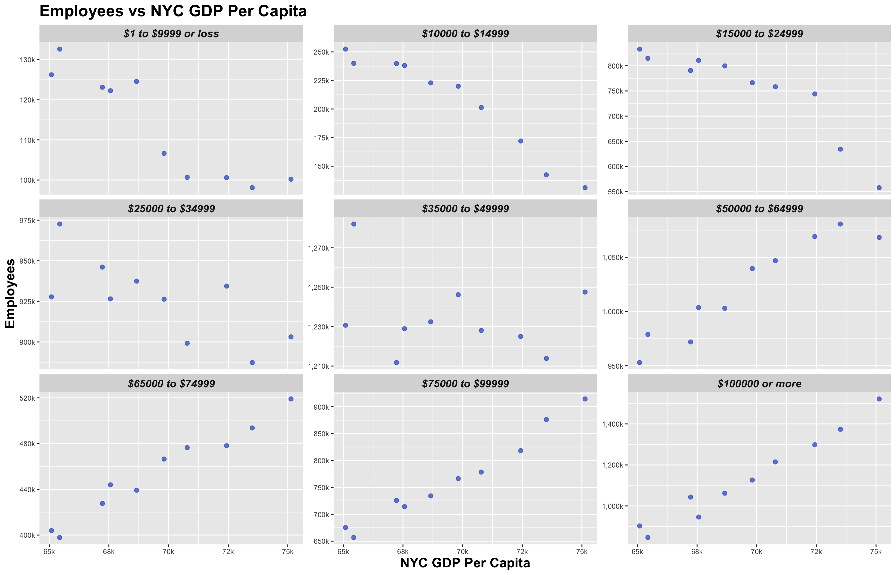
Observations on NumEmp vs GDP/NYC GDP Per Capita: